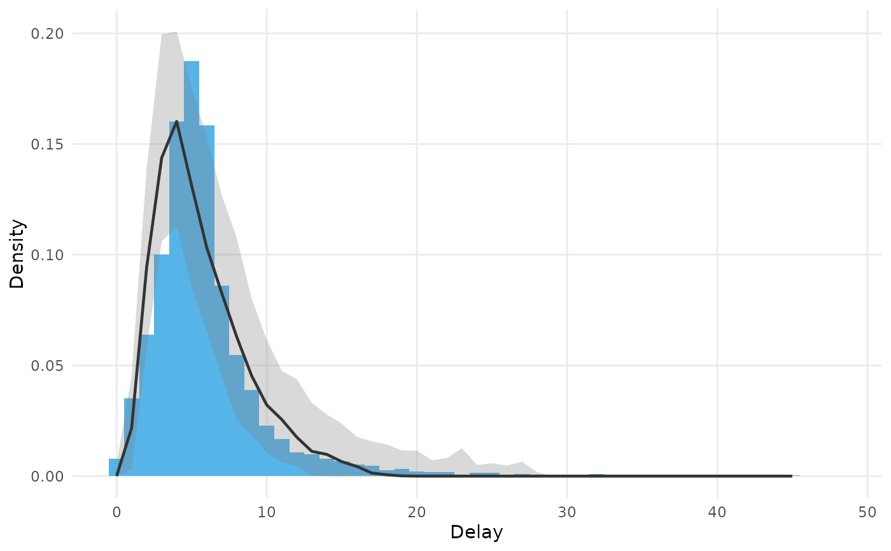

Plot the delays a fitted model predicts over the delays it was fitted to
Source:R/plot_delays.R
plot_delays.epidist_fit.RdDraws the observed delays of the data the model was fitted to as columns,
as plot_delays.epidist_linelist_data() does, and the delays the model
predicts for the same cases over them, as the posterior median proportion
in each bin with a ribbon between two quantiles.
Usage
# S3 method for class 'epidist_fit'
plot_delays(
x,
by = NULL,
binwidth = 1,
ndraws = 100,
probs = c(0.05, 0.95),
...
)Arguments
- x
An
epidist_linelist_dataorepidist_aggregate_dataobject, a named list of them to compare, or a model fitted withepidist().- by
A character vector of columns of the model data that define the strata to colour by. If
NULL, the default, the variables in the distributional parameter formulas are used, asepidist_strata()does.- binwidth
The width of the delay bins, on the scale of the event times. Defaults to 1, the daily censoring the data usually has.
- ndraws
The number of posterior draws to predict from, sampled at random. Defaults to 100, which is enough for the median and the quantiles of a binned distribution and bounds the size of the prediction. Use
NULLto predict from every draw.- probs
A numeric vector of two probabilities giving the quantiles the ribbon spans. Defaults to
c(0.05, 0.95).- ...
Passed to the method.
Details
The predictions come from brms::posterior_predict(), so they are of the
delay as it was observed, under the censoring and truncation of each case.
That makes the plot a posterior predictive check of the observed delays
rather than a picture of the delay distribution itself, which
plot.epidist_delay_draws() draws.
Both the columns and the predictions are proportions within each stratum, so a bin holds the share of cases with that delay. Bins where neither the data nor the predictive interval puts any mass are dropped, which trims the tail of the predictive distribution.
Examples
# \donttest{
fit <- sierra_leone_ebola_data |>
as_epidist_linelist_data(
pdate_lwr = "date_of_symptom_onset",
sdate_lwr = "date_of_sample_tested"
) |>
as_epidist_aggregate_data() |>
as_epidist_marginal_model() |>
epidist(chains = 2, cores = 2, refresh = ifelse(interactive(), 250, 0))
#> ℹ No primary event upper bound provided, using the primary event lower bound + 1 day as the assumed upper bound.
#> ℹ No secondary event upper bound provided, using the secondary event lower bound + 1 day as the assumed upper bound.
#> ℹ No observation time column provided, using 2015-09-14 as the observation date (the maximum of the secondary event upper bound).
#> ! Setting 2394 relative observation times (`relative_obs_time`) greater than 98
#> (2x the maximum delay) to Inf.
#> ℹ This improves model efficiency by reducing the number of unique observation
#> times in the data.
#> ℹ The impact on model accuracy should be negligible because these relative
#> observation times are high enough to cause very limited right truncation.
#> ℹ The original relative observation times are available in
#> `orig_relative_obs_time`.
#> ℹ Raise `obs_time_threshold` to avoid this behaviour.
#> Warning: Found infinite values in the data, which may cause issues for Stan.
#> ℹ Data summarised by unique combinations of:
#> * Model variables: delay bounds, observation time, and primary censoring window
#> ! Reduced from 2453 to 272 rows.
#> ℹ This should improve model efficiency with no loss of information.
#> Warning: Found infinite values in the data, which may cause issues for Stan.
#> Warning: Found infinite values in the data, which may cause issues for Stan.
#> Compiling Stan program...
#> Start sampling
plot_delays(fit)

# }